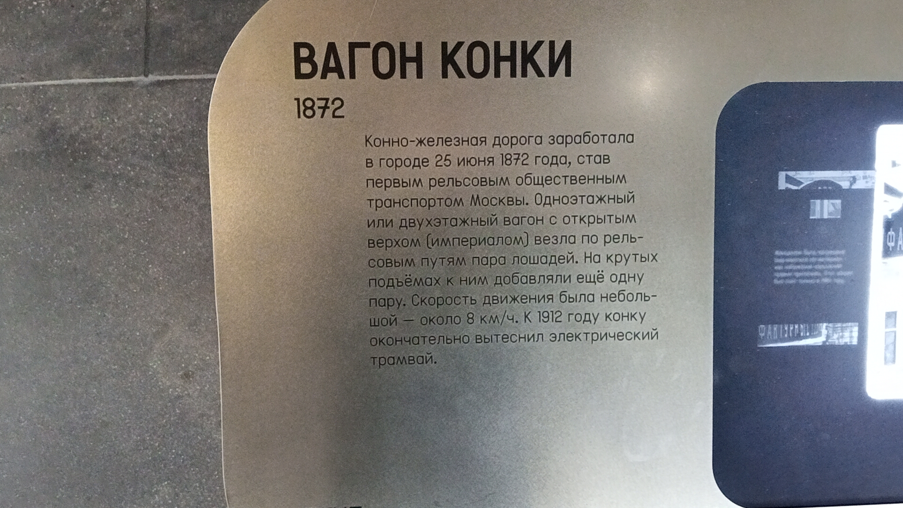
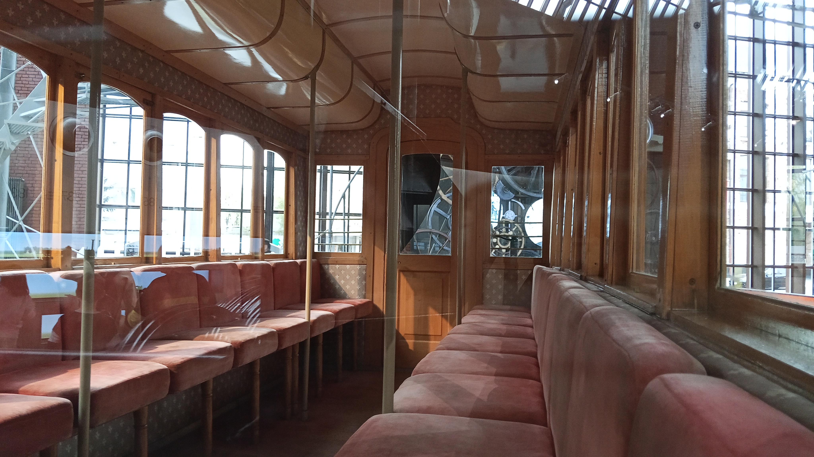

Вагон конки № 35
Вагон конки — двухэтажный экипаж с открытым «империалом» (вторым этажом), который тянули лошади по рельсовым путям. Именно конка 25 июня (7 июля) 1872 года открыла эру рельсового общественного транспорта Москвы.
Сохранившийся вагон № 35 — единственный экземпляр московской конки. Он воссоздан в 1998–1999 годах на подлинной ходовой части, обнаруженной в депо имени Апакова.
Общая информация
🏭 Производство
Мастерские: «Братья Боннар и Ко» (Франция)
Годы постройки: ок. 1872–1873
Тип: двухэтажный вагон с империалом
Тяга: лошади (пара или четвёрка)
📍 Эксплуатация
Первая линия: центр — Смоленский (Белорусский) вокзал
Протяжённость линии: 4,5 км, 9 разъездов
Окончание движения: 1911–1912 годы
Депо/парк: Коллекция исторических трамваев (1999–2022) → Музей Транспорта Москвы (с 01.2022)
Текущее состояние: не эксплуатируется, музейный
⭐ Уникальность: Это единственный сохранившийся вагон московской конки. Его ходовая часть до конца XX века использовалась в составе трамвайной вышки для ремонта контактной сети. В 1998–1999 годах на Трамвайно-ремонтном заводе (ТРЗ) воссоздали деревянный кузов с империалом по архивным чертежам и фотографиям.
Технические характеристики
Основные параметры
Максимальная скорость: 8–10 км/ч
Вместимость: 40 пассажиров (20 внизу + 18–20 наверху)
Длина: около 8 метров
Ширина: около 2 метров
Масса: около 4–5 тонн
Конструкция
Кузов: деревянный, двухэтажный
Империал: открытая площадка на крыше
Вход на империал: крутая винтовая лестница
Цена проезда (1872): 10 коп. внизу, 5 коп. наверху
Обслуживающий персонал: кучер и кондуктор
История
Рождение московской конки
25 июня (7 июля) 1872 года открылась первая линия конно-железной дороги, связавшая центр Москвы с площадью Смоленского (Белорусского) вокзала. Линия была пробной и обслуживала посетителей Политехнической выставки. На линии работало 10 двухэтажных вагонов.
Эпоха конки
Конка быстро завоевала популярность, но имела серьёзные недостатки: скорость не превышала 8 км/ч, на подъёмах приходилось пристегивать дополнительных лошадей-форейторов. К 1891 году протяжённость линий достигла 45 вёрст.
Закат конки
В 1899 году электрический трамвай провёз первых пассажиров от Савёловского вокзала до Петровского парка. Более десяти лет трамвай и конка существовали совместно. Последний маршрут конки закрылся в конце 1911 — начале 1912 года.
Вторая жизнь шасси
После вывода из пассажирской эксплуатации вагон был перестроен в прицепной вагон-вышку для строительства и ремонта контактной сети электрического трамвая. В 1992 году такая несамоходная вышка ещё стояла в депо имени П.Л. Апакова — именно на этом шасси позже воссоздали музейный вагон.
Воссоздание вагона № 35
В 1998–1999 годах на Трамвайно-ремонтном заводе (ТРЗ) вагон воссоздали с использованием оригинальной ходовой части и кузова новой постройки. По архивным чертежам собрали деревянный кузов с империалом, окрасили в исторические цвета и присвоили номер 35. В апреле 1999 года вагон возглавил юбилейный трамвайный парад.
Коллекция исторических трамваев
Вагон числился в Коллекции исторических трамваев. Регулярно участвовал в парадах трамваев в Москве: его буксировали Tatra T3SU № 481, 71-608КМ № 0125, № 0427, МТТЧ № 1410 и другие вагоны. Экспонировался в депо имени Н.Э. Баумана.
Передача в Музей Транспорта Москвы
Вагон передан из Коллекции исторических трамваев в фонд Музея Транспорта Москвы. С этого момента числится в экспозиции музея.
Перевозка в экспозиционный комплекс
Вагон перевезён с Трамвайно-ремонтного завода (ТРЗ) в экспозиционный комплекс Музея транспорта Москвы на Новорязанской улице, 27.
Интересный факт: Дамам пользоваться империалом возбранялось — считалось, что женщина в пышной юбке не сможет подняться по узкой винтовой лестнице, не нарушив правила этикета.
📌 Из TransPhoto: Вагон № 35 — единственный сохранившийся экземпляр московской конки. После вывода из пассажирской эксплуатации его шасси долго служило вышкой для ремонта контактной сети. На парадах разных лет конку буксировали трамваи Tatra T3SU № 481, 71-608КМ № 0125, № 0427, МТТЧ № 1410 и другие.
Особенности конструкции
Двухэтажная компоновка
Вагон имел нижний закрытый салон и верхнюю открытую площадку — «империал». Наверх вела крутая винтообразная лестница. Империал не имел навеса, пассажиры не были защищены от дождя и снега.
Конная тяга
Обычно вагон тянула пара лошадей. На крутых подъёмах (например, в районе Тверской) к ним добавляли ещё 1–2 пары лошадей-форейторов. Управлял упряжкой кучер, в вагоне работал кондуктор.
Классовое разделение
Нижний салон считался «первым классом», империал — «вторым». Разница в цене (10 коп. внизу против 5 коп. наверху) делала конку доступной для разных слоёв населения.
Реконструкция 1999 года
Подлинная ходовая часть сохранилась, но деревянный кузов пришлось воссоздавать заново. Использовались архивные чертежи, исторические фотографии и гравюры. Вагон окрасили в традиционные цвета XIX века.
🎉 Символ эпохи: Вагон конки № 35 — единственный сохранившийся экземпляр московской конки. Он находится в постоянной экспозиции Музея транспорта Москвы на Новорязанской улице, 27.
Фотогалерея

📸 pfandrom

📸 pfandrom

📸 pfandrom
Нажмите на фото для увеличения
«Вагоны очень красивы и по изяществу отделки и удобству не оставляют желать ничего лучшего. Сидения устроены наверху и внизу вагонов, всего на 40 человек, по 10 человек на каждой скамейке. Цена в один конец 10 коп. внизу и 5 коп. наверху вагона».